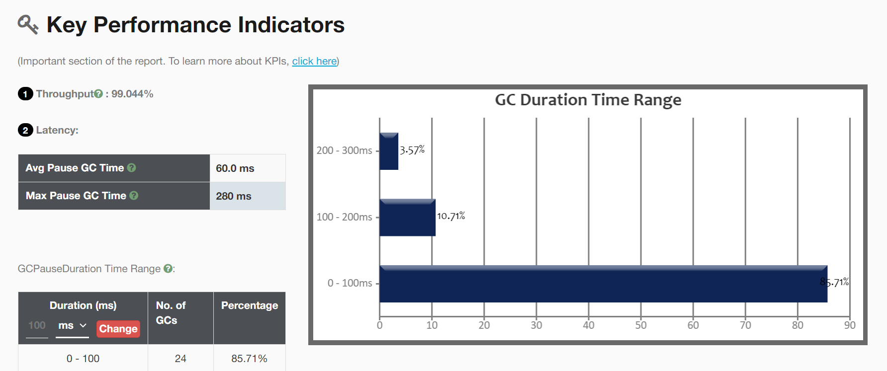
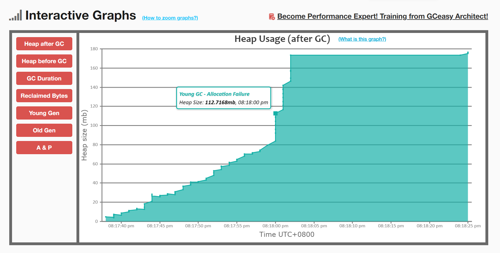

虚拟机如何调优及案例分析？
1. 调优理论
1.1. 为什么需要调优？
- 提高程序运行的性能，如提高程序的吞吐量、降低程序的响应时间等。
- 解决程序出现的问题，如解决内存溢出、内存泄漏、死锁等问题。
性能问题一般需要调整程序代码，虚拟机调优是最后手段。
1.2. 调优的过程是怎样的？
- 监控虚拟机的行为，如堆的内存占用、GC次数、GC耗时等；
- 确定目标，如降低内存占用、减小响应延迟等；
- 制定方案，如调整虚拟机参数；
- 验证方案，对比执行方案前和执行方案后行为的变化是否符合预期；
- 结果验收，灰量测试，全量发布。

2. 调优手段
2.1. 虚拟机参数有哪些分类？
- 标准参数，以
-开头，如-version等。 - 非标准参数，以
-X开头，如-Xms，-Xmx等。 - 不稳定参数，以
-XX开头，如-XX:+UseG1GC等。
2.2. JDK工具包中有哪些工具？
JDK工具：
- jps：打印当前系统中的Java进程。
- jinfo：打印指定Java进程的虚拟机参数和系统属性，及设置虚拟机参数。
- jmap：打印指定Java进程的堆的内存信息，及转储堆的内存快照文件。
- jstat：打印指定Java进程的堆内存信息和GC信息。
- jstack：打印指定Java进程的堆栈信息。
- jhat：分析堆的内存快照文件。
- jconsole：可视化工具。
- visualvm：可视化工具。
第三方工具：
- GC Easy：分析GC日志。
- MAT：分析堆的内存快照文件。
- JProfile：可视化工具。
- Arthas：线上监控诊断工具。
2.3. 如何打印及分析虚拟机的GC日志？
可以通过指定虚拟机参数来设置打印的虚拟机的GC日志信息：
-XX:+PrintGC：开启打印GC日志。-XX:+PrintGCDetail：开启打印GC详细日志。-XX:+PrintGCTimeStamps：开启打印GC耗时。-XX:+PrintGCDateStamps：开启打印GC发生的时间。-XX:+PrintHeapAtGC：开启GC时打印堆信息。-Xloggc:<filepath>：指定GC日志输出文件的路径。
-XX:+PrintGC -XX:+PrintGCDetail -XX:+PrintGCTimeStamps -XX:+PrintGCDateStamps -XX:+PrintHeapAtGC -Xloggc:./gc.log下面是一段GC日志的示例，我们进行以下分析:
Java HotSpot(TM) 64-Bit Server VM (25.181-b13) for linux-amd64 JRE (1.8.0_181-b13), built on Jul 7 2018 00:56:38 by "java_re" with gcc 4.3.0 20080428 (Red Hat 4.3.0-8)
Memory: 4k page, physical 8174940k(1150320k free), swap 4194300k(361300k free)
CommandLine flags: -XX:InitialHeapSize=130799040 -XX:MaxHeapSize=2092784640 -XX:+PrintGC -XX:+PrintGCDateStamps -XX:+PrintGCDetails -XX:+PrintGCTimeStamps -XX:+PrintHeapAtGC -XX:+UseCompressedClassPointers -XX:+UseCompressedOops -XX:+UseParallelGC
{Heap before GC invocations=1 (full 0):
PSYoungGen total 37888K, used 32768K [0x00000000d6700000, 0x00000000d9100000, 0x0000000100000000)
eden space 32768K, 100% used [0x00000000d6700000,0x00000000d8700000,0x00000000d8700000)
from space 5120K, 0% used [0x00000000d8c00000,0x00000000d8c00000,0x00000000d9100000)
to space 5120K, 0% used [0x00000000d8700000,0x00000000d8700000,0x00000000d8c00000)
ParOldGen total 86016K, used 0K [0x0000000083400000, 0x0000000088800000, 0x00000000d6700000)
object space 86016K, 0% used [0x0000000083400000,0x0000000083400000,0x0000000088800000)
Metaspace used 5355K, capacity 5554K, committed 5888K, reserved 1056768K
class space used 556K, capacity 655K, committed 768K, reserved 1048576K
2023-09-14T20:04:40.328+0800: 1.191: [GC (Allocation Failure) [PSYoungGen: 32768K->3186K(37888K)] 32768K->3194K(123904K), 0.0119571 secs] [Times: user=0.02 sys=0.00, real=0.01 secs]
Heap after GC invocations=1 (full 0):
PSYoungGen total 37888K, used 3186K [0x00000000d6700000, 0x00000000d9100000, 0x0000000100000000)
eden space 32768K, 0% used [0x00000000d6700000,0x00000000d6700000,0x00000000d8700000)
from space 5120K, 62% used [0x00000000d8700000,0x00000000d8a1cba0,0x00000000d8c00000)
to space 5120K, 0% used [0x00000000d8c00000,0x00000000d8c00000,0x00000000d9100000)
ParOldGen total 86016K, used 8K [0x0000000083400000, 0x0000000088800000, 0x00000000d6700000)
object space 86016K, 0% used [0x0000000083400000,0x0000000083402000,0x0000000088800000)
Metaspace used 5355K, capacity 5554K, committed 5888K, reserved 1056768K
class space used 556K, capacity 655K, committed 768K, reserved 1048576K
}
{Heap before GC invocations=11 (full 1):
PSYoungGen total 423424K, used 3984K [0x00000000d6700000, 0x00000000f0b80000, 0x0000000100000000)
eden space 417280K, 0% used [0x00000000d6700000,0x00000000d6700000,0x00000000efe80000)
from space 6144K, 64% used [0x00000000f0580000,0x00000000f0964040,0x00000000f0b80000)
to space 6656K, 0% used [0x00000000efe80000,0x00000000efe80000,0x00000000f0500000)
ParOldGen total 86016K, used 8255K [0x0000000083400000, 0x0000000088800000, 0x00000000d6700000)
object space 86016K, 9% used [0x0000000083400000,0x0000000083c0fd08,0x0000000088800000)
Metaspace used 20547K, capacity 21142K, committed 21296K, reserved 1069056K
class space used 2437K, capacity 2597K, committed 2688K, reserved 1048576K
2023-09-14T20:04:44.496+0800: 5.360: [Full GC (Metadata GC Threshold) [PSYoungGen: 3984K->0K(423424K)] [ParOldGen: 8255K->8041K(50176K)] 12239K->8041K(473600K), [Metaspace: 20547K->20547K(1069056K)], 0.0580953 secs] [Times: user=0.11 sys=0.01, real=0.06 secs]
Heap after GC invocations=11 (full 1):
PSYoungGen total 423424K, used 0K [0x00000000d6700000, 0x00000000f0b80000, 0x0000000100000000)
eden space 417280K, 0% used [0x00000000d6700000,0x00000000d6700000,0x00000000efe80000)
from space 6144K, 0% used [0x00000000f0580000,0x00000000f0580000,0x00000000f0b80000)
to space 6656K, 0% used [0x00000000efe80000,0x00000000efe80000,0x00000000f0500000)
ParOldGen total 50176K, used 8041K [0x0000000083400000, 0x0000000086500000, 0x00000000d6700000)
object space 50176K, 16% used [0x0000000083400000,0x0000000083bda730,0x0000000086500000)
Metaspace used 20547K, capacity 21142K, committed 21296K, reserved 1069056K
class space used 2437K, capacity 2597K, committed 2688K, reserved 1048576K
}- 从第
1行可以看到虚拟机为HotSpot，JRE的版本为1.8.0_181-b13； - 从第
3行可以看到虚拟机启动时的命令行参数； - 从第
13行可以看到在20:04:40.328时发生了一次Minor GC；GC的原因是Allocation Failure； GC后，新生代占用的内存由32768K变为了3186K，新生代Eden区和From区的总大小为37888K；整堆的占用的内存由32768K变为了3194K，新生代Eden区和From区以及老年代的总大小为123904K；GC耗时0.0119571 secs。
2023-09-14T20:04:40.328+0800: 1.191: [GC (Allocation Failure) [PSYoungGen: 32768K->3186K(37888K)] 32768K->3194K(123904K), 0.0119571 secs] [Times: user=0.02 sys=0.00, real=0.01 secs] - 从第
33行可以看到在20:04:44.496时发生了一次Full GC；GC的原因是Metadata GC Threshold；GC后，新生代占用的内存由3984K变为了0K，新生代Eden区和From区的总大小为423424K；老年代占用的内存由8255K变为了8041K，老年代的总大小为50176K；整堆的占用的内存由12239K变为了8041K，新生代中的Eden区和From区以及老年代的总大小为473600K；元空间的占用的内存由20547K变为了20547K，元空间的总大小为1069056K；GC耗时0.0580953 secs。
2023-09-14T20:04:44.496+0800: 5.360: [Full GC (Metadata GC Threshold) [PSYoungGen: 3984K->0K(423424K)] [ParOldGen: 8255K->8041K(50176K)] 12239K->8041K(473600K), [Metaspace: 20547K->20547K(1069056K)], 0.0580953 secs] [Times: user=0.11 sys=0.01, real=0.06 secs] 从上面的示例中可以看到GC日志包含以下信息：
- GC发生的时间。
- GC的类型和发生的原因。
- GC后堆内存和元空间占用的变化。
- GC的耗时。
3. 调优案例
3.1. 如何为虚拟机指定合适的堆内存大小和元空间大小？
堆内存大小和元空间大小最佳实践：
- 整堆建议设置为老年代实际使用内存的4倍。
- 新生代建议设置为老年代实际使用内存的1~1.5倍。
- 元空间建议设置为元空间实际使用内存的2倍。
可以通过GC Easy对GC日志的分析结果来决定虚拟机堆内存大小和元空间大小，如下示例：
1. 首先，通过GC Easy对调优前程序GC日志的分析结果得出调优目标；
从下图中我们可以看到新生代分配内存为642.5mb，新生代实际使用内存为642.45mb；老年代分配内存为117.5mb，老年代实际使用内存为83.17mb；元空间分配内存为1076mb，元空间实际使用内存为55.48mb。（调优目标：元空间的大小设置不合理，利用率低）
{kind=link}
从下图我们可以看到GC的吞吐量为99.044%，GC平均暂停时间为60.0 ms，GC最大暂停时间为280 ms。

{kind=link}
从下图中我们可以看到在程序运行的过程中发生了3次Full GC，原因是Metadata GC Threshold，本质上是元空间达到阈值需要扩容时触发了Full GC。（调优目标：Full GC很耗时，应尽可能避免Full GC）
{kind=link}
从下图中我们可以看到在程序运行的过程中共发生了28次GC，总耗时1 sec 680 ms；Minor GC发生了25次，总耗时1 sec 200 ms；Full GC发生了3次，总耗时480 ms.
{kind=link}
2. 然后，根据调优目标调整虚拟机参数；
将整堆内存设置为老年代实际使用内存的4倍，即83.17mb * 4 ≈ 320mb；将新生代设置为老年代实际使用内存的1.5倍，即83.17mb * 1.5 ≈ 120mb；将元空间设置为元空间实际使用内存的2倍，即55.48mb * 2 ≈ 120mb。虚拟机参数如下：
-Xms320m -Xmx320m -Xmn120m -XX:MetaspaceSize=120m -XX:MaxMetaspaceSize=120m3. 最后，通过GC Easy对调优后程序GC日志的分析结果验证方案。
从下图中我们可以看到新生代分配内存为120mb，新生代实际使用内存为113.53mb；老年代分配内存为200mb，老年代实际使用内存为173.85mb；元空间分配内存为120mb，元空间实际使用内存为n/a。
{kind=link}
从下图我们可以看到GC的吞吐量为97.451%，GC平均暂停时间为13.5 ms，GC最大暂停时间为40.0 ms。吞吐量下降是由于调优后新生代分配的内存由642.5mb变为了120mb，需要更多次的Minor GC来清除垃圾；GC平均暂停时间下降是由于调优后并未发生Full GC。
{kind=link}
从下图中我们可以看到在程序运行的过程中未发生过FullGC。
{kind=link}
从下图中我们可以看到在程序运行的过程中共发生了89次GC，总耗时1 sec 200 ms；Minor GC发生了89次，总耗时1 sec 200 ms；Full GC发生了0次，总耗时0 ms.
{kind=link}
3.2. 如何为虚拟机指定合适的Java虚拟机栈大小？
通过虚拟机参数-Xss1m设置线程堆栈的大小为1MB即可。
3.3. 如何为虚拟机选择合适的垃圾收集器？
- 吞吐量优先：选用Parallel Scavenge搭配Parallel Old，虚拟机参数为
-XX:+UseParallelGC。 - 响应时间优先：选用ParNew搭配CMS，虚拟机参数为
-XX:+UseConcMarkSweepGC。 - 全功能但不全能：选用G1，虚拟机参数为
-XX:+UseG1GC。
3.4. 程序发生内存溢出如何排查？
- 在启动应用程序时，需要打开虚拟机参数
-XX:+HeapDumpOnOutOfMemoryError，以便在发生内存溢出时转储堆的内存快照文件。 - 使用MAT等工具分析堆的内存快照文件，排查是否发生了内存泄漏；如果发生了内存泄漏，需要排查并修复相应的代码。
- 排查堆的内存空间是否分配的不合理；如果不合理，则需要调节虚拟机参数。
3.5. 程序发生死锁如何排查？
以两个线程死锁为例，线程A获取到锁m，并尝试获取锁n；而线程B获取到锁n，并尝试获取锁m；此时线程A和线程B由于永远获取不到各自所需的锁而产生死锁。
1. 首先，通过jps -l命令获取指定Java进程的进程ID；
$ jps -l
11840 com.remeio.upsnippet.jvm.gc.DeadLockTest
4772 sun.tools.jps.Jps2. 然后，通过jstack <pid>命令查看当前Java进程的线程状态。

从下面打印的信息中我们可以看到：
- 线程
Thread-1的状态为BLOCKED，其持有锁0x000000076bcae728，并且正在等待锁0x000000076bcae718。 - 线程
Thread-2的状态也为BLOCKED，其持有锁0x000000076bcae718，并且正在等待锁0x000000076bcae728。 - 线程
Thread-1和线程Thread-2产生了死锁。
$ jstack -l 11840
...
"Thread-1" #13 prio=5 os_prio=0 tid=0x000002a338f87000 nid=0x59b8 waiting for monitor entry [0x000000e0786fe000]
java.lang.Thread.State: BLOCKED (on object monitor)
at com.remeio.upsnippet.jvm.gc.DeadLockTest$2.run(DeadLockTest.java:36)
- waiting to lock <0x000000076bcae718> (a java.lang.Object)
- locked <0x000000076bcae728> (a java.lang.Object)
at java.lang.Thread.run(Thread.java:750)
Locked ownable synchronizers:
- None
"Thread-0" #12 prio=5 os_prio=0 tid=0x000002a338f84000 nid=0x8c94 waiting for monitor entry [0x000000e0785ff000]
java.lang.Thread.State: BLOCKED (on object monitor)
at com.remeio.upsnippet.jvm.gc.DeadLockTest$1.run(DeadLockTest.java:20)
- waiting to lock <0x000000076bcae728> (a java.lang.Object)
- locked <0x000000076bcae718> (a java.lang.Object)
at java.lang.Thread.run(Thread.java:750)
Locked ownable synchronizers:
- None
...
JNI global references: 12
Found one Java-level deadlock:
=============================
"Thread-1":
waiting to lock monitor 0x000002a336f2ba08 (object 0x000000076bcae718, a java.lang.Object),
which is held by "Thread-0"
"Thread-0":
waiting to lock monitor 0x000002a336f28f68 (object 0x000000076bcae728, a java.lang.Object),
which is held by "Thread-1"
Java stack information for the threads listed above:
===================================================
"Thread-1":
at com.remeio.upsnippet.jvm.gc.DeadLockTest$2.run(DeadLockTest.java:36)
- waiting to lock <0x000000076bcae718> (a java.lang.Object)
- locked <0x000000076bcae728> (a java.lang.Object)
at java.lang.Thread.run(Thread.java:750)
"Thread-0":
at com.remeio.upsnippet.jvm.gc.DeadLockTest$1.run(DeadLockTest.java:20)
- waiting to lock <0x000000076bcae728> (a java.lang.Object)
- locked <0x000000076bcae718> (a java.lang.Object)
at java.lang.Thread.run(Thread.java:750)
Found 1 deadlock.3. 找到产生死锁的代码，进行修改。
从下面打印的信息中我们可以看到，产生死锁的代码在：
com.remeio.upsnippet.jvm.gc.DeadLockTest$1.run(DeadLockTest.java:20)com.remeio.upsnippet.jvm.gc.DeadLockTest$2.run(DeadLockTest.java:36)
找到对应的代码，进行修改即可。
目录